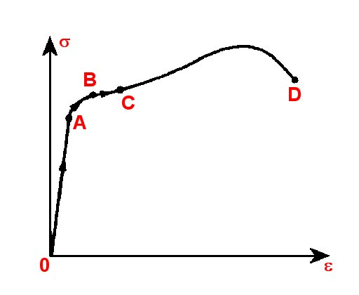
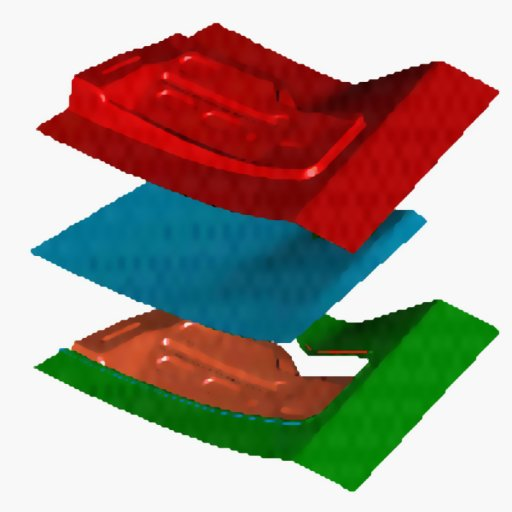
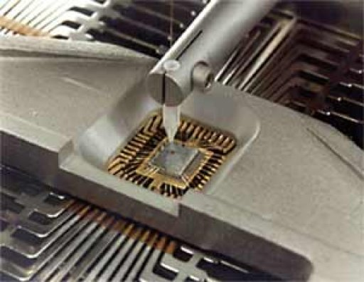
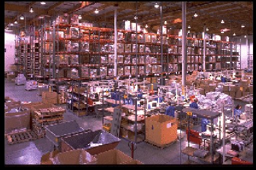
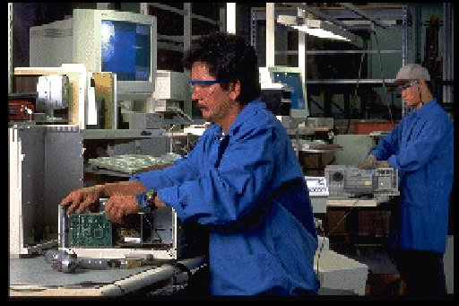
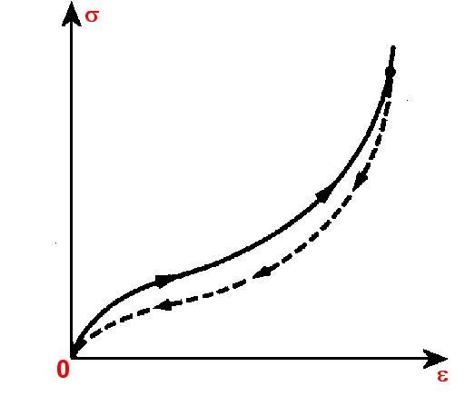
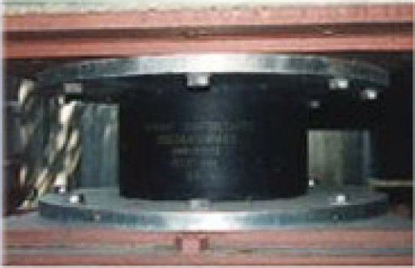

- Fig. 1
- Diagrama efort unitar−alungire relativă tipică petru un metal supus întinderii.
|

- Fig. 2
- Ambutisarea tablei.
|

- Fig. 3
- Fire de aur extrem de subţiri folosite pentru conexiunile electrice ale circuitelor integrate.
|

- Fig. 4
- Milioane de calculatoare sunt aruncate anual ca deşeuri!
|

- Fig. 5
- Recuperarea materialelor preţioase şi potenţial periculoase pentru mediu, conţinute în calculatoarele aruncate ca deşeuri.
|

- Fig. 6
- Diagrama efort unitar−alungire relativă pentru cauciuc.
|

- Fig. 7
- Protejarea antiseismică prin interpunerea între clădiri şi fundaţii a unor tampoane de cauciuc.
|